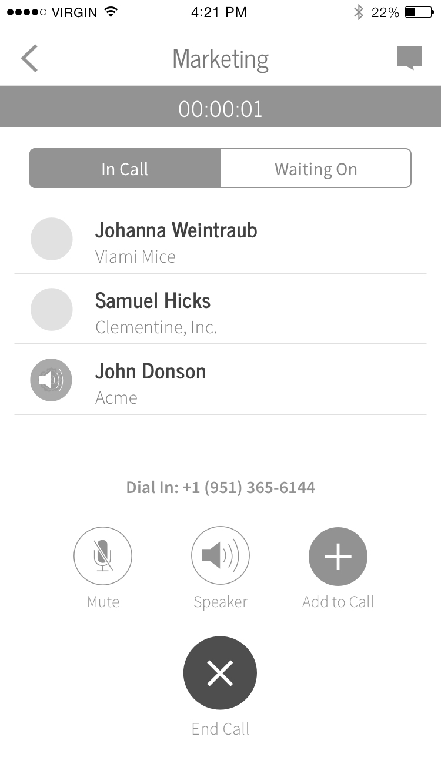

Conference Calls
Company
Clementine, a conference call and messaging app for enterprise. Acquired by Dropbox in 2015.
Role & Responsibilities
As one of two UI/UX designers, I designed the mobile conference call experience with the goal of reassuring customers that their calls were being made with their Clementine number and not their personal number.
An additional requirement for the project was to make the UI scalable for additional call features we had on the product roadmap, including call transferring and conference rescheduling.
The Problem
Many customers who had experimented with other conference call apps before were used to apps that dial a conference line using the customer’s personal phone number. However, one of our core features was giving customers their own business line through the app to keep their work and personal lives separate.
Prior to the redesign, Clementine’s conference call screen looked too similar to the iOS phone UI. Through customer feedback and testing, we found that they weren’t always sure if calls were being made through the app or through their own phone number.
Customer Personas
Through interviews with current and potential customers, we developed three personas based on user roles and motivations in Clementine: The Employee, The CIO/COO, and The IT Admin. While it was valuable to design for the needs of the CIO/COO and IT Admin personas in other areas of the app, the Employee would be the one spending the greatest amount of time making conference calls.
We identified the Employee as someone, typically a salesperson, who spends much of their day on phone calls and messaging through a private business line to get their job done.
What this meant for conference calls was that the experience had to be as straightforward as possible for someone who was making sensitive calls to many different people every day. It would be important for the system to give clear feedback about what was happening during a call.
Competitive Research
The landscape of enterprise communication includes apps that do only text-based communication (Slack, Pie), those that do text and voice (Convoi), and those that do voice through another product (UberConference, Hall).
I looked at telephony apps mainly to get a sense of how other products handle multi-person phone calls, and consumer-focused communication apps that have a larger pool of customers.
General trends I found were that
- Many apps limit tasks you can perform when you’re in a call and don’t let you return to the normal app UI.
- Not many apps show who’s in a call and who isn’t.
- Ways in which you start a conference call vary, but the majority of apps require you to start from a preexisting group, not by selecting people individually.


Sketching
I sketched out a few ideas to get high-level feedback from the team. Questions I mulled over during sketching were:
- Which call functionalities should be top-level during a call, and which can be hidden?
- Do customers need to be able to see who’s on a call at all times, or is communicating through voice sufficient?
- How do we strike a balance between making the call experience a cohesive part of the whole product and differentiating it enough from the rest of the app so customers know for sure when they’re in a call?


Wireframes
Starting the project, the top priority goal was branding our conference call experience. It was a change our customers were clamoring for and needed to be pushed out in an immediate release.



For wireframes, I focused primarily on the conference call screen. Since we wanted the screen to be Clementine-branded, I kept to our color and type guidelines and explored different hierarchies for organizing information and controls.
I also explored options for emphasizing and hiding different call controls, so we’d have a variety of screens for testing. At the wireframing stage, what we knew for sure was that people found it most important to know which people they were on a call with. Until further user research and testing, I’d have little information about what controls people found most important to see during a call.
After iterating and critique with the team, I landed on a few key features of the conference call screen:

The conference call screen should still use style guidelines consistent with the rest of the app, but with a different hierarchy, especially in typography and color.
Information should be organized primarily by the x-axis to optimize the amount of information on-screen. In the rest of the app, information is organized vertically, but using a horizontal structure here would allow for more space to present vital information, such as participants and call controls.
Call controls should be kept from obstructing the view of as many participants as possible.
Prototyping & User Testing
x

The Redesigned Conference Call
x